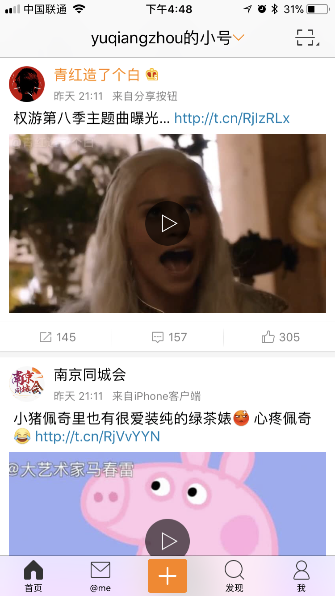
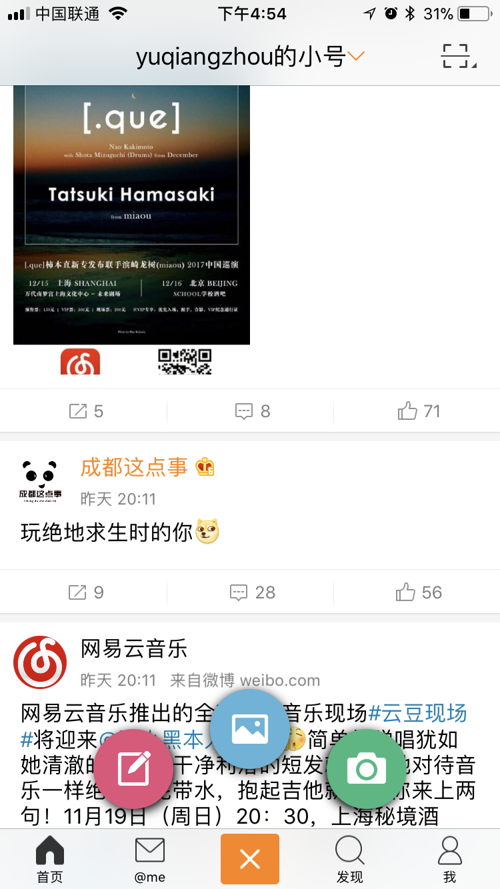
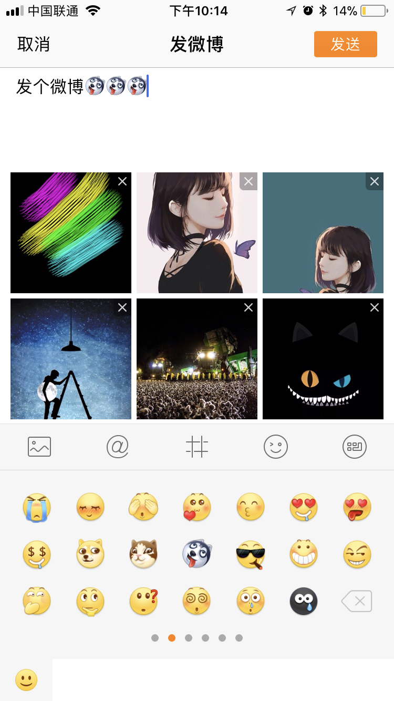
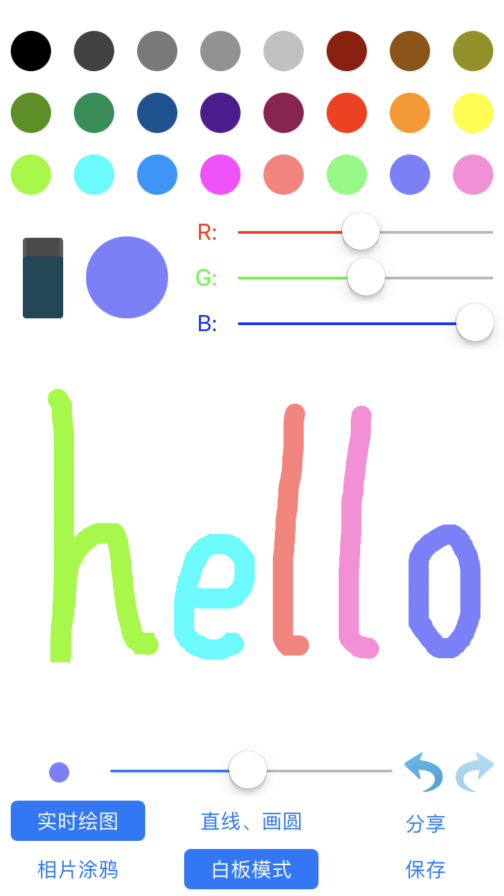
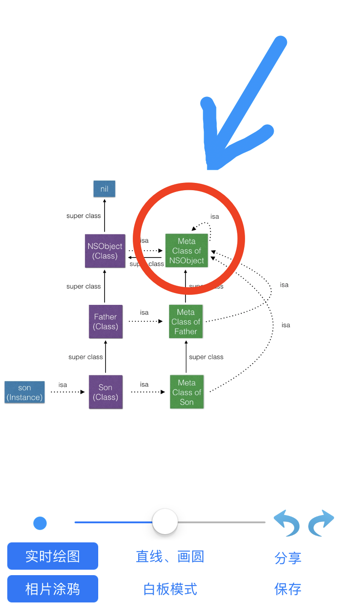
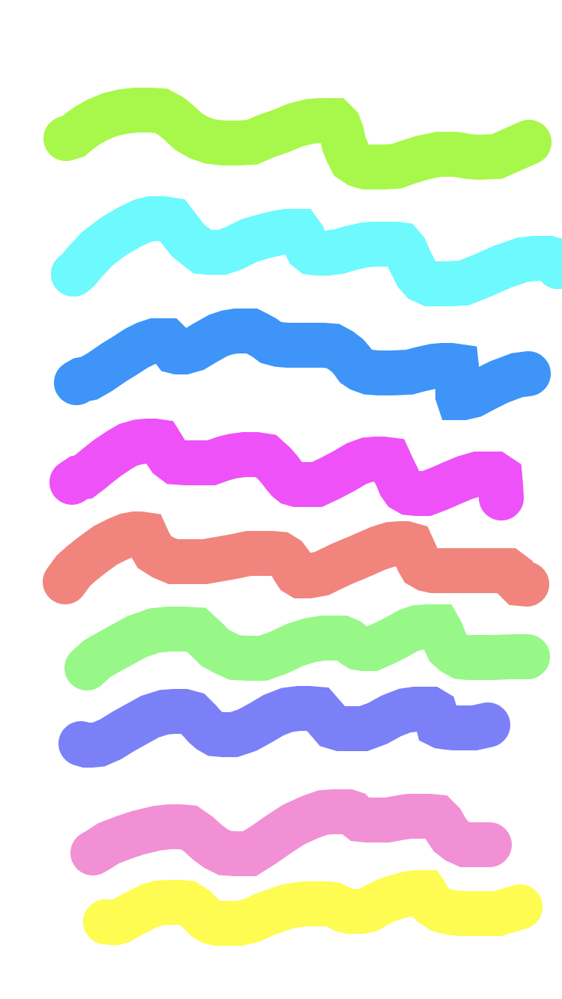

-
- Basic info. 基本信息
- 个人信息: 卿宸 / 男 / 25岁
- 教育经历: 本科 / 四川理工学院 / 工程管理 / 2012-2016
- 英语水平: CET-6
- GitHub: https://www.github.com/mrtanis
-
- Skill. 技能清单
- - 熟悉NSRunLoop及Objective - C Runtime的运行机制
- - 熟悉AVFoundation、Photos、Core Graphics、Core Image等框架
- - 熟练使用及自定义各种UI控件，在代码、storyboard及xib文件中运用自动布局
- - 熟练使用Category对官方类添加自定义方法
- - 熟练使用GCD多线程编程，有网络开发经验
- - 熟练使用KVC、KVO
- - 熟练掌握对代码的封装，如对网络请求、视频播放、相册多选等软件需求的封装
- - 熟练使用委托、通知等回调方法及Block
- - 熟练使用MVC、MVVM架构，有完整的项目独立开发经验
- - 熟练使用第三方框架，如AFNetworking、SDWebImage、Masonry、MJRefresh等
- - 熟练使用CocoaPods，Git版本控制工具
- - 能流畅阅读英文文档及其他资料，在Stack Overflow、GitHub 等社区正常交流
-
- Experience. iOS独立开发项目
Webo（第三方微博客户端）（2017.06 - 2017.11） 源代码
-
功能介绍
1. 微博账号登录、切换（使用OAuth2接口）
2. 微博信息流的查看、评论、转发，支持微博表情显示
3. 查看@我的微博、@我的评论、发出的评论、收到的评论、发送的微博、关注列表、粉丝列表
4. 发送文字及图片微博，支持相册多选，可调用自定义表情键盘，实现文字表情混合输入
5. 微博图片支持大图浏览，可显示gif动图，可保存图片至相册
6. 微博视频支持旋转自动全屏播放，可调整播放进度，进入微博详情页面视频继续播放，视频不在可视范围暂停播放，进入可视范围继续播放
7. 支持二维码扫描，可选择相册图片扫描，可开启闪光灯，扫描后可复制链接或打开链接
8. 软件图标支持3D Touch进入写微博及二维码扫描
-
技术点介绍
1. 对不同的数据请求进行封装，AFNetworking在最底层，降低耦合性，获取的数据通过Block传递至顶层
2. 通过检测账户过期日期及对比软件和存储在NSUserDefaults中的版本号来确定登录界面、新特性界面和主界面的进入逻辑
3. 对首页和@me页面信息流进行缓存，软件启动优先载入缓存，节约流量
4. 编辑界面的TextView采用自定义UIMenuController，实现对含表情的文字进行复制粘贴，发送至服务器时转换为普通文本
5. 借助正则表达式实现表情显示，昵称、话题、URL突出显示，TextView侦测UIDataDetectorTypeLink，实现点击URL进入APP内浏览器浏览，网页可分享到微信、QQ，也支持使用safari打开
6. 视频播放界面使用AVFoundation进行自定义，由于微博开放接口不含视频链接，每次刷新调用多线程后台解析出网页中的视频链接并设置过期时间，页面滚动时后台检测已过期视频并进行解析，实现点击播放按钮立即加载视频，提升用户体验
7. 自定义相册多选模块，使用Photos框架，先获取所有相册，然后选取“相机胶卷”相册的照片作为默认数据源，选择视图和预览视图采用不同的collectionView和cell，通过图片的缩放动画和视图的透明度变化实现自然过渡
-
软件截图
  
TouchTracker（画图软件）（2017.04 开发时间约一周） 源代码
-
功能介绍
1. 绘制实时路径、直线、圆，支持白板模式或相册涂鸦模式
2. 调整画笔粗细，选择常用颜色或者调整RGB值自定义颜色
3. 长按单根直线可进行删除或者拖动
4. 路径撤销、反撤销、双击清屏，也可使用橡皮擦模式进行清除
5. 保存画作至相册或分享到微信、QQ
-
技术点介绍
1. 以UITouch的值作为键来区分和存储自由路径、直线、圆
2. 通过UIGesturede的代理方法设置longPressGesture和panGesture可同时接收手势，实现长按后拖动来移动一条直线
3. 使用kCGBlendModeClear模式绘制来实现橡皮擦功能
4. 新建图形上下文，在上下文中渲染背景图片的layer层和绘画视图的layer层，从上下文中获取最终的图像，实现保存或分享
5. 使用NSUserDefaults保存和读取绘画参数，实现重启软件恢复上次状态
-
软件截图
  
-
- Acknowledgement. 致谢
-
感谢您花时间阅读我的简历，期待能有机会和您共事。